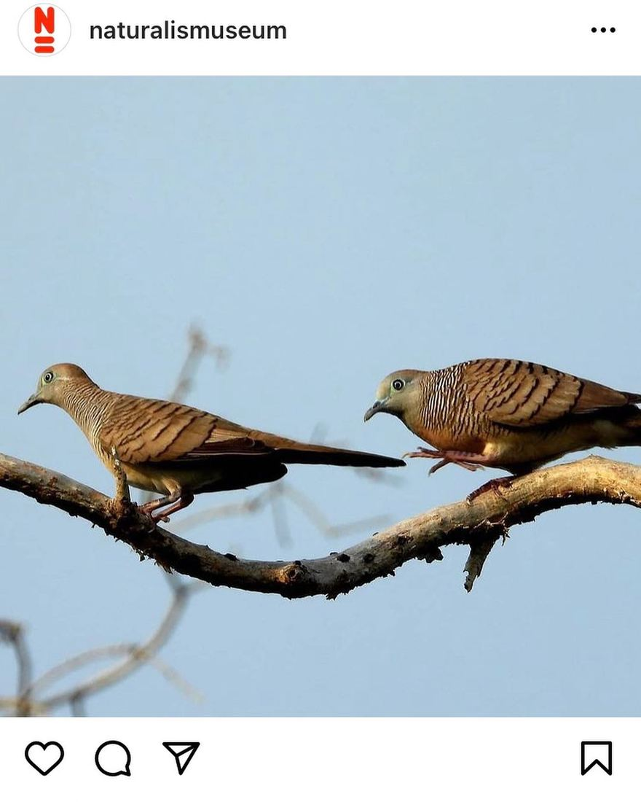
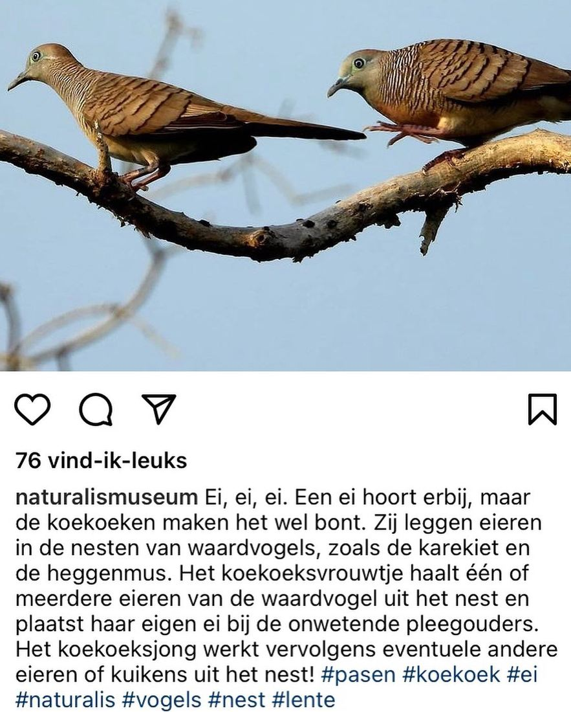

Zebraduif met Pasen
4 april 2021 · Naturalis
- Op de foto
- Zebraduif
- Het ging over
- Inheemse soort


Fijn pasen allemaal! 🐣🐰🐇 Ook namens @naturalismuseum !
Dit is waarschijnlijk Zebraduif / Zebra dove / Geopelia striata, of een andere soort uit de Geopelia familie